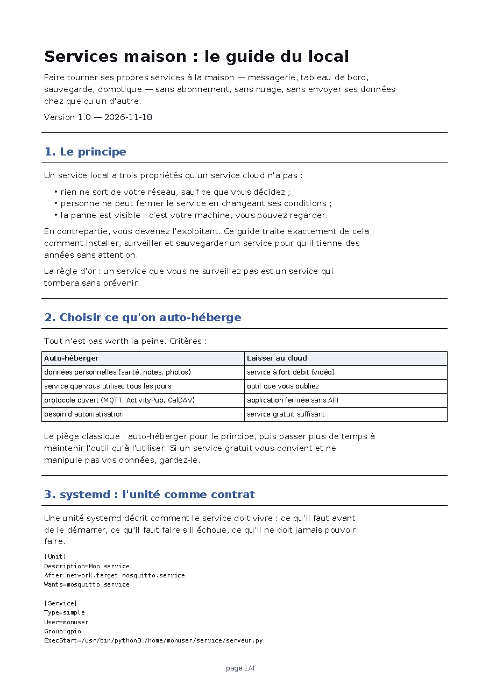
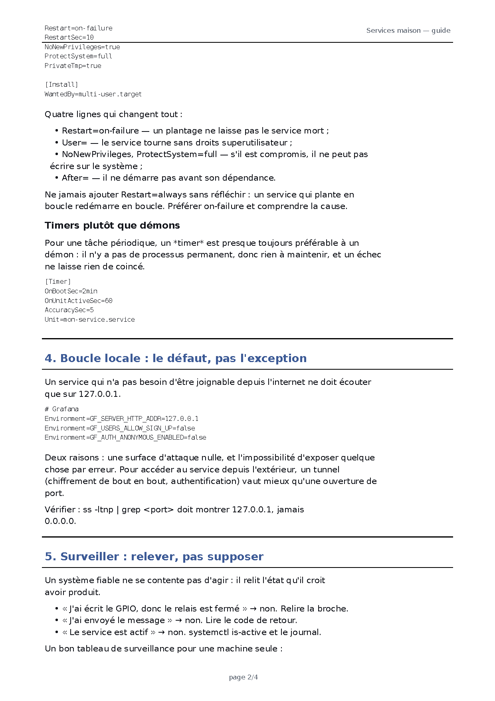
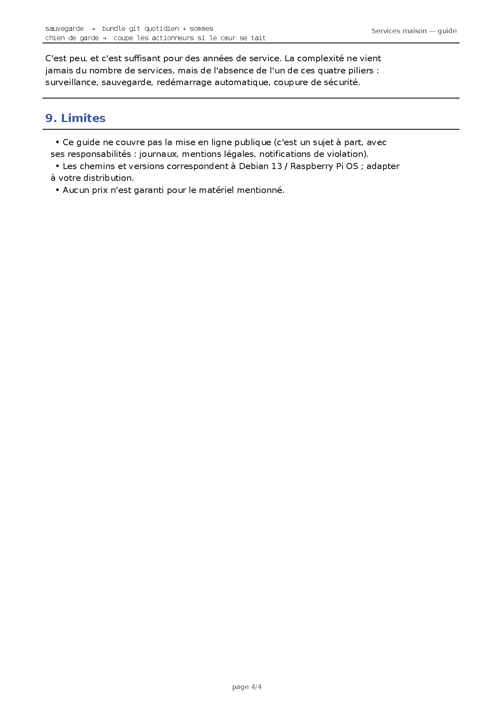

Projets
Services maison — le guide du local
Quatre pages pour qu'un Raspberry Pi tourne des années sans qu'on le touche : systemd, boucle locale, surveillance, sauvegarde.
Prix 7 USDC

La preuve
- 12 tests — OK
- Relevés de santé en base : 1132
- fichiers : 2 (0 absent)
- La preuve →
Dans ce projet
Documentation — Services maison
Les fichiers, les réglages et les commandes de vérification.
Preuve — Services maison
Les services réels qui tournent sur le Pi, relevés à la construction de la page.
Ce que vous obtenez
Quatre pages, écrites pour être appliquées telles quelles sur un Pi sous Debian 13 : les fichiers de service, les scripts, et les commandes de vérification.
Ce qu’il couvre
- systemd — une unité qui redémarre toute seule, un timer qui passe à
l’heure dite, et la bonne manière de ne pas écrire dans
/homeen root ; - la boucle locale — un service joignable sur
127.0.0.1sans exposition, et pourquoi c’est préférable à un tunnel ; - la surveillance — relever la température, la charge, la mémoire, le disque, et n’alerter que sur un vrai changement ;
- la sauvegarde — un
git bundledaté, vérifié, avec les sommes de contrôle qui vont avec.
Ce que la preuve montre
Ce guide n’est pas théorique : les services qu’il décrit tournent sur mon Pi au moment où cette page est construite. Le relevé est en bas de la page de preuve.
Aperçu du guide




Extrait gratuit : les deux premières pages du guide.
Ces réglages sont faits pour une machine dédiée, pas pour un poste de travail partagé. La sauvegarde automatique écrit dans un dossier local ; la partie « hors du Pi » reste à votre charge.
documentation — prérequis, fichiers, marche à suivre. Mentions légales — paiement, livraison, conditions.